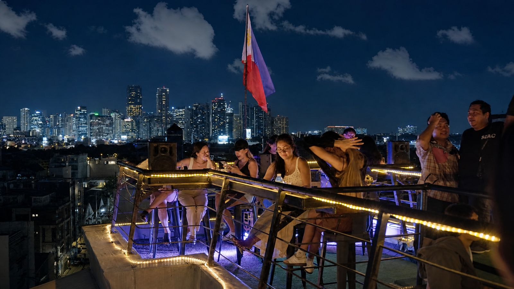
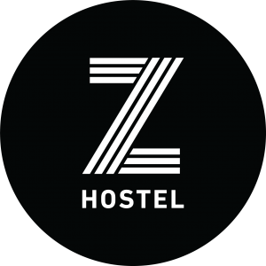
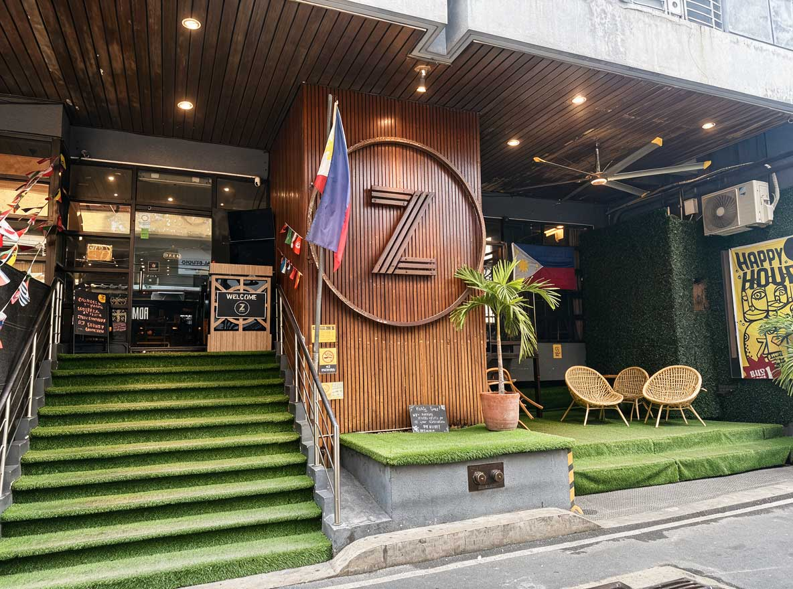
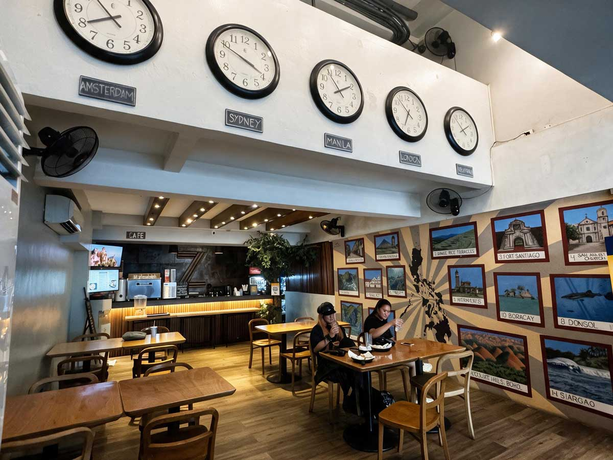
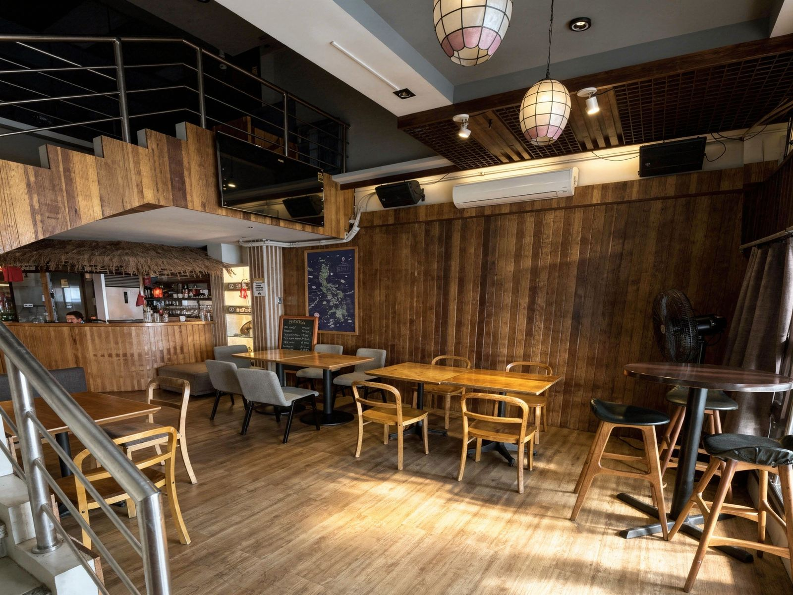
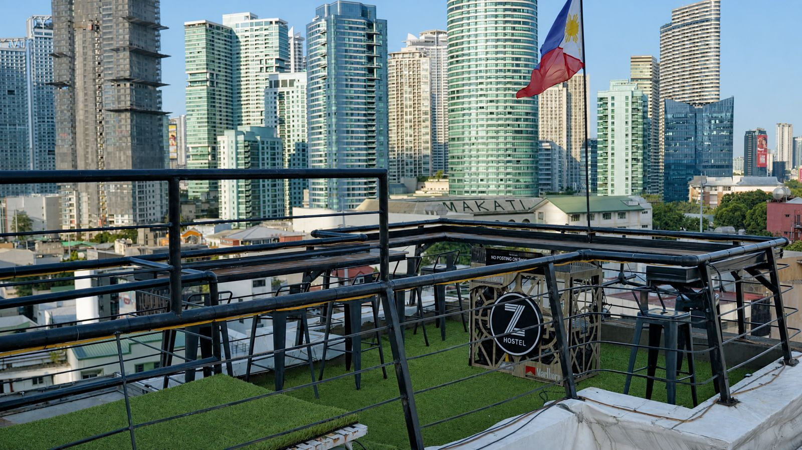
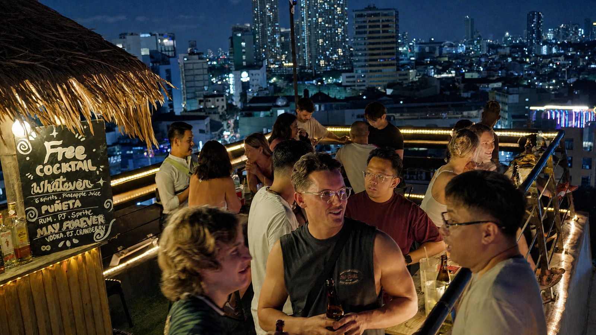
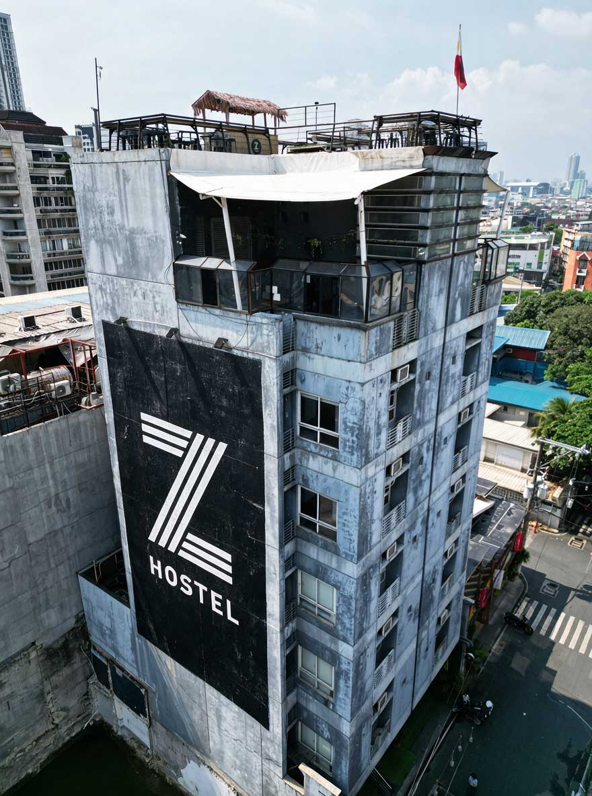

THE ODY-Z spills out of one address. Z Hostel is home base — rooftop, lobby, the crew that's been throwing this party since 2017. Right across the corner, the Vine Building brings its own eight tenants into the takeover. Here's what's inside both.

Z Hostel opened in Poblacion around 2015. Two years later its founders launched Z Street, the block-party format that helped turn this neighborhood into Makati's nightlife capital — and every October since, this same building has been the arena.
Downstairs, the lobby runs on world clocks and a wall of stickers, weekly-events boards, and Tagalog cheat sheets for whoever just landed — equal parts front desk and community bulletin. Upstairs, the rooftop bar looks straight out over the Makati skyline: a thatched-roof tiki bar, string lights, and a Philippine flag that catches the wind over every party this building throws.
On 10.31, Z Hostel's rooftop and ground-floor lounge are both part of the crawl — the calm before (and after) the street outside gets loud.






A PLUD property at the busiest crossing in Poblacion — and, this October, part of the same block-wide takeover as THE ODY-Z.
Before it was retail, it was a home — six floors of it, left alone long enough that ivy took the stairwell and bougainvillea took the balconies. Nobody polished that away. The real building still has a neon "VINE BLDG." sign glowing over the doorway, gig posters layered on the walls, hand-painted signage propped against carts. That's Poblacion, and that's the Vine Building.
Eight small businesses now share the six floors above the corner of Don Pedro & Alfonso — bring your hands.
V402 Vine Bldg, Cor. Don Pedro & Alfonso, Poblacion, Makati · @vinebuilding
| Floor | Tenant(s) | What's there |
|---|---|---|
| 06 | Balcony | Communal, open-air |
| 05 | Pancit Habhab by Chef Punk | Noodles, upstairs |
| 04 | Green Door | Events space |
| 03 | Reminder & Sulok | Plus a common lounge |
| 02 | Don Poke | Poke bowls |
| G | Mahalo, Only Pans, La Hora Dorada | Corner entrance, 3 units |
RSVP for THE ODY-Z, and the whole block — Z Hostel included — is part of the night.